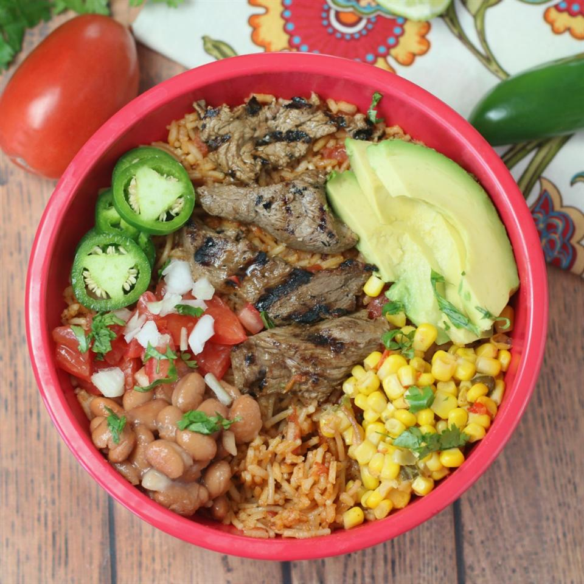

Sizzling Steak Burrito Bowl

Description
This sizzling steak burrito bowl is not your average burrito bowl! Marinated grilled steak, savory Spanish rice, zesty beans and corn, smoky ranch, plus all the other fantastic fixings. Perfect for game day! Serve with lime wedges.
Ingredients
- 1½ pounds beef tenderloin tips, cut into bite-size pieces
- 1 (6 ounce) pouch carne asada marinade with jalapeno and garlic (such as Frontera®)
- 1 tablespoon adobo sauce from chipotle peppers
- ½ teaspoon Montreal steak seasoning
- ¾ cup ranch dressing
- 1 chipotle pepper in adobo sauce, finely chopped
- 1 teaspoon adobo sauce from chipotle peppers
- 2 cups water
- 1 (14.5 ounce) can diced tomatoes with green chile peppers, warmed
- 1 (6.8 ounce) package Spanish-style rice mix (such as Rice-A-Roni®)
- 2 tablespoons margarine
- 1 avocado, cut into wedges
- 3 Roma tomatoes, chopped
- 1 onion, diced
- 1 cup shredded lettuce
- ¾ cup shredded Cheddar cheese
- 1 lime, cut into wedges
- 1 jalapeno pepper, diced
- ¼ cup chopped fresh cilantro
- 1 cup pinto beans, drained
- 1 cup Southwest-style corn with poblano and red peppers, drained
- 2 teaspoons vegetable oil, or as needed
Steps
- Place beef in a gallon-size resealable plastic bag. Add carne asada marinade, 1 tablespoon adobo sauce, and steak seasoning. Seal and place in refrigerator to marinate for 1 hour.
- Combine ranch dressing, chipotle pepper, and 1 teaspoon adobo sauce in a small bowl until well mixed. Cover with plastic wrap and refrigerate dressing until ready to assemble meal.
- Combine water, diced tomato mix, Spanish rice mix, and margarine in a large skillet. Bring to a boil. Reduce heat to medium-low, cover, and simmer until rice is tender, 15 to 20 minutes.
- Place avocado, tomatoes, onion, lettuce, Cheddar cheese, lime, jalapeno pepper, and cilantro in individual ramekins or little bowls as burrito fixings.
- Place pinto beans and corn in individual microwave-safe bowls. Heat in microwave until warm, 2 to 3 minutes.
- Preheat a ridged grill pan over medium-high heat. Grease lightly with oil.
- Drain and discard marinade from the beef, if necessary. Cook on the grill pan until medium-rare, hot and slightly pink in the center, 2 to 3 minutes per side. Transfer beef to a plate.
- Serve beef alongside the rice, burrito fixings, pinto beans, and corn as make-your-own bowls, or divide rice into serving bowls and top with the fixings. Drizzle with the chipotle dressing.